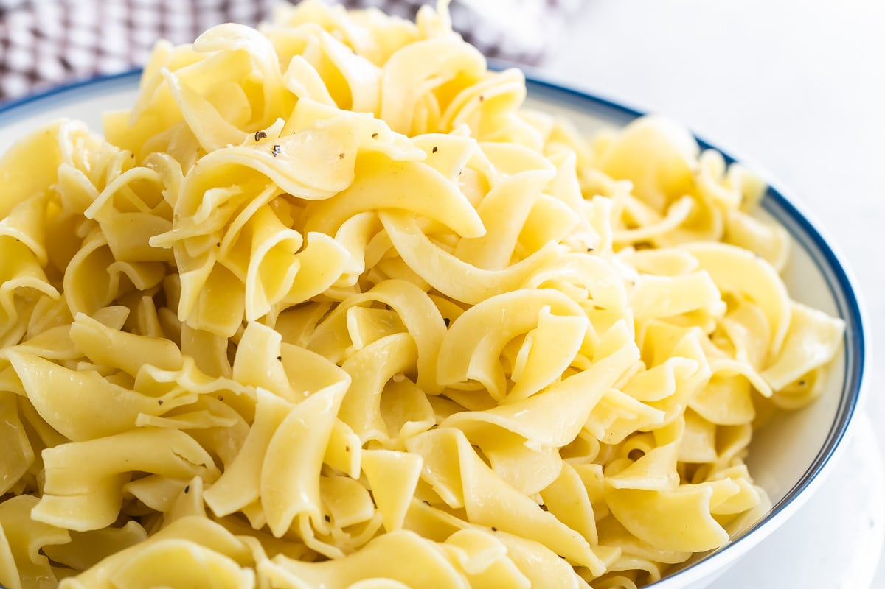

Buttered Noodles

Description
Nothing could be simpler for a quick dinner that your kids are guaranteed to love than buttered noodles. A dash of parmesan cheese adds some dimension to this classic dish.
Ingredients
- 1 lb. pasta of your choice (egg noodles are a popular option)
- 4 tbsp butter or margarine
- 2 tbsp grated parmesan cheese (or to taste)
- Salt and pepper to taste
Steps
- Bring a large pot of salted water to a boil. When it comes to salt in your pasta water, more is more.
- Add pasta to boiling water. Stir vigorously.
- Cook pasta according to package directions.
- Remove pot from heat and strain pasta. Return to the pot.
- Add butter to pasta and stir until melted.
- Add parmesan cheese to pasta and stir until incorporated.
- Serve immediately.